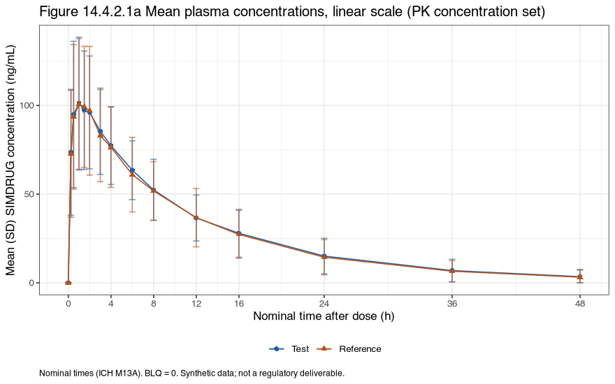

Stage 4: analysis
NCA, bioequivalence analysis and executed tables
Synthetic data only: simulated for a portfolio worked example; not real trial data and not a regulatory deliverable.
- Cmax ratio T/R101.07% 90% CI 98.89 to 103.30
- AUC(0-t) ratio T/R103.99% 90% CI 98.52 to 109.75
- Bioequivalence set38 of 40 participants
- ConclusionBE shown on unrounded limits
NCA with PKNCA 0.12.1, configured per the SAP: actual times, linear-up/log-down AUC, conc.blq = list(first = "keep", middle = "keep", last = "keep") so BLQ counts as zero everywhere (ICH M13A), lambda z from at least 3 points after tmax. The SAP parameter rules are applied with PKNCA exclude(): AUC(0-inf) is flagged in 2 profiles with more than 20% extrapolated and lambda z-based parameters in 0 profiles with adjusted R-squared below 0.90; the values stay in ADPP (NCAEXRSN) and are not summarized or analyzed. The bioequivalence model is the ICH M13A general linear model (sequence, participant within sequence, period, formulation). Tables use rtables 0.6.17 and tern 0.9.13; RTF comes from formatters::export_as_rtf() (formatters 0.5.13 with r2rtf 1.3.1).
What the ICH M13A BLQ setting changes
PKNCA's default drops a BLQ value that sits between quantifiable concentrations; ICH M13A treats it as zero. One profile has such a value (scenario 6), so the same NCA was also run with the PKNCA default. The values that differ:
| Participant | Period | Treatment | Parameter | BLQ kept as 0 (ICH M13A, used) | PKNCA default (BLQ dropped) | Difference (%) |
|---|---|---|---|---|---|---|
| SIMBE01-101-024 | 2 | Reference | AUCIFO | 1443.75 | 1564.60 | -7.7 |
| SIMBE01-101-024 | 2 | Reference | AUCLST | 1312.11 | 1432.96 | -8.4 |
Cmax fell at the first post-dose sample in 2 evaluable profiles (first_point_cmax.csv). ICH M13A asks for a discussion of robustness, so a supplementary analysis removes those participants from the bioequivalence set; its result is in the report and in be_supplementary.csv.
Results report
report/report.html: the Quarto report (rendered by run_all.R) with the figures, every table, the exclusions and the ICH M13A acceptability checks.
Tables
| Output | Population | Files |
|---|---|---|
| Table 14.1.2 Demographics | Safety set | RTF cells (csv) |
| Table 14.3.1.1 Overview of TEAEs | Safety set | RTF cells (csv) |
| Table 14.4.1.1 Concentrations by nominal time | PK concentration set | RTF cells (csv) |
| Table 14.4.4.1 PK parameters | PK parameter set | RTF cells (csv) |
| Table 14.4.3.1 Bioequivalence result | Bioequivalence set | RTF cells (csv) |
| Table 14.4.3.2 ANOVA effects | Bioequivalence set | RTF cells (csv) |
Figures

Result files
nca_parameters.csv (one row per profile), nca_settings.json (options and parameter rules), blq_rule_effect.csv, be_results.csv, be_results.json, be_anova.csv, be_supplementary.csv, first_point_cmax.csv, pk_checks.csv, analysis_sets.csv. Programs: 01_nca.R, 02_be.R, 03_tlf.R, report/report.qmd.
Not covered here. SAS was not used in this example; the SAS twins in the TLF library are not executed (no license). Phoenix WinNonlin was not used. These outputs are executed on synthetic data and are not validated deliverables.